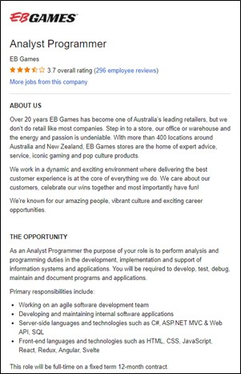

Salutations! I am Jack Philip Burgess, leader of the group Spark 22, student number s3893750. I began getting really into IT, especially programming, in late primary school and followed this up to the end of high school where I sadly said goodbye for a bit to undertake a mechanical engineering course for 2 years. But now I am back following a path I can finally say I enjoy and hope for my future in! I also enjoy playing cricket during the summer and indoor cricket during the winter, trying to have my shifts at the local pub give me as much time for these and University as possible around my usual 30-hour weeks.
The Myers-Briggs test states that I am a logical person, more likely and willing to follow a rational, methodical approach to reach my goal with a set out plan, rather than spontaneously 'winging' what I am doing when I get sudden bursts of energy. It also means that I am more focused on getting the job done and what is required, rather than how I or others feel. Being a tactile learner means that I benefit greatly from hands-on learning and creating rather than listening or getting shown something happening. Having my team roles set as an explorer, innovator, analyst and expert, states that I am someone who likes to come up with new, original ideas, work through them my own way, criticise my work and others and get frustrated if someone else tries to take over their way.

Ideal Job and Industry Data
- 
- Jack Burgess has the ideal job of Analyst Programmer with EB Games, a leading retail store in the video game and pop culture industry in Australia. The Analyst Programmer role, as advertised on seek.com.au, is a fixed term contract for a web developer to develop and maintain existing and new internal applications used by EB Games. This would be a challenging role as the developer would have to learn and comprehend an existing codebase, then work with existing team members to develop said codebase to meet yet unspecified project goals. The various server and client-side technologies required by the developer to work with, would be a valuable experience builder for them in future endeavours.
- Computer Systems Engineer / Architect (2) - This is due to the hardware and building/designing of computers supplying little to-no valuable experience in the world of software development and video game trends.
- Help Desk Officer (5) - As this position is about the analysis and development of software based around the trends of the customers and not tech support when someone's computer is running slowly, this occupation supplies very little in terms of experience and skills to the position.
- Graphic Designer/Desktop Publisher (7) - Although the ability to professionally design one's own graphics for the aesthetic of the application they are developing would be a money saver, it is unnecessary, and developers are usually too busy with their own work to do someone else's.
Applicable Job Titles: Solutions Architect (1), .NET Developer (3), Service Desk Analyst (5), Front End Developer (6), Java Developer (7), Systems Administrator (8), Network Engineer (9), Test Analyst (10), Software Engineer (11), Senior Java Developer (13), Web Developer (15), Full Stack Developer (17), Software Developer (19) and Developer (23)
The top 3 job titles that have not been included in this list are: - Graphic Designer (2) - Although the ability to professionally design one's own graphics for the aesthetic of the application they are developing would be a money saver, it is ultimately unnecessary, and developers are usually too busy with their own work to do someone else's.
- Systems Engineer (4) - Due to the hardware and building/designing of electronic systems, like computers, supplying little to-no valuable experience in the world of software development and video game trends.
- Senior Net Developer (12) - Although use of the network is crucial in the collection, storage and sharing of data, the development and maintenance of it is not up to the analyst programmer, thus the experience and skills for that job are not necessary as experience in manipulating and utilizing it is all that is required.
As the position entails the analysis of customers and trends, the development, maintenance, and testing of internal applications, like websites and other software, and the documentation of all these aspects, any job or occupation that focusses on the collection and processing of data or development and testing of software and applications are all applicable to the position of analyst programmer.
Applicable IT Skills: SQL (1), JavaScript (2), JAVA (3), SAP (6), Microsoft C# (12), Customer Service (14), Software Engineering (15), .NET Programming (16), Website Production (17), Oracle (19), Git (21) and Scrum (23).
The top 3 IT skills that have not been included in this list are: - Microsoft Windows (4) - Although usage of operating systems, like Windows, Linux, or Apple, is necessary to be able to utilize a computer to work on, experience and skills specific to these systems is redundant as all one needs is to be able to use it, not maintain or develop it.
- Project Management (5) - The role of the Analyst Programmer is to analyse, develop, test and document trends and applications with their focuses set by the briefing given by the project manager who oversees a team of people and is responsible for the direct line to the customer.
- Business Management (7) - Once again, this role is above the scope of the analyst programmer and looks more at the politics and business side, how to manage the team and customer to benefit the business the most.
Generic Skills: Communication Skills (1), Problem Solving (2), Organisational Skills (3), Writing (4), Teamwork/Collaboration (5), Troubleshooting (6), Planning (7), Detail-Oriented (8), Research (10), Time Management (12), Quality Assurance and Control (14), Meeting Deadlines (16), Analytical Skills (17), multi-Tasking (20), English (21) and Articulate (23)
The top 3 generic skills that have not been included in this list are: - Creativity (9) - Although the development, testing and documenting is up to the analysis programmer, the designing and brainstorming of ideas come from someone working closely to the customer and making a design brief and graphic designer.
- Leadership (11) - Analyst programmers are more followers than leaders, interpreting the data in a way that's meaningful to others and following the project manager and designing team's guide when developing, updating, and maintaining applications.
- Mentoring (13) - Whilst training a newcomer or giving some helpful tips cannot be ruled out of any position or line of work, mentoring is not inside the scope of an analysis programmer's contract and employers are much more focussed on how well one can analyse data and develop applications to suit it rather than how well one can teach someone else to do their job for them.
In an area and position as vague as customer and trend analysis and internal application development, testing and documentation, it is no wonder that a large spectrum of IT and generic skills are all useful. Some could even argue that the points raised in leaving some skills out can be countered and having a little bit of experience or skill in an area that you don't believe will be useful, could be the difference between an employer choosing you over someone else.
After all this in-depth analysis and research, I am even more enticed by the position of analyst programmer. Every company needs someone that can analyse their required data, about their customers or trends, and them also being able to implement them into their networks and applications will lead to better business. And the skills and experienced gained out of this position is more than enough to be able to transition into another area or move up the corporate ladder.
Applicable Occupations: Software Developer/Engineer (1), Systems Analyst (3), Network/Systems Administrator (4), Web Developer (6), Software QA (Quality Assurance) Engineer/Tester (9), Network Support Officer (12), Cyber/Information Security Engineer/Analyst (13), UI/UX Designer (14), Data Architect (18), Web Designer (23) and Website Administrator (24)
The top 3 occupations that have not been included in this list are: